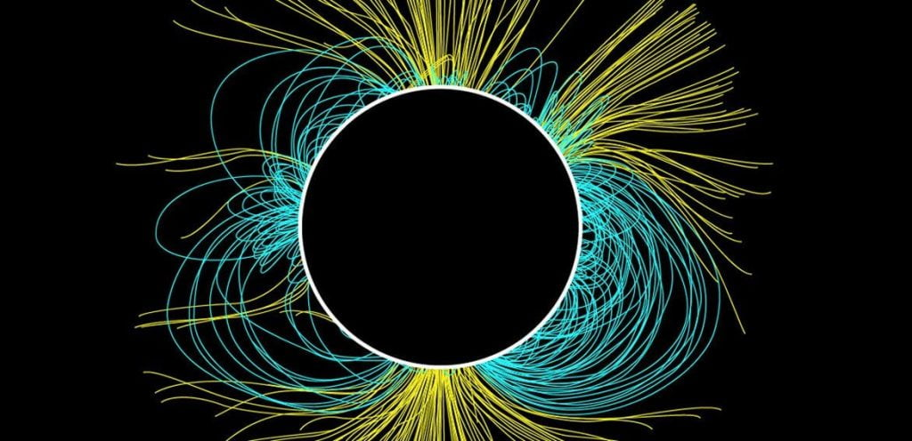

ဒါဆို ကျွန်တော်တို့ရဲ့ နေမှာရော သံလိုက်စက်ကွင်း ရှိပါသလား။ ရှိတယ် ဆိုရင်ရော နေရဲ့ သံလိုက်စက်ကွင်းက ဘာတွေ ထူးခြားမှု ရှိနေသလဲ။
ကျွန်တော်တို့ ကမ္ဘာလိုပဲ နေမှာလဲ သံလိုက်စက်ကွင်း ရှိပါတယ်။ နေမှာလဲ သံလိုက် မြောက်ဝင်ရိုးစွန်း နဲ့ သံလိုက် တောင်ဝင်ရိုးစွန်းတွေ ရှိကြပါတယ်။ ဥပမာ ပြောရရင် ဧရာမ သံလိုက် တုံးကြီး လိုပေါ့။
နေရဲ့ သံလိုက်စက်ကွင်းဟာ ကမ္ဘာ့ သံလိုက် စက်ကွင်းထက် နှစ်ဆခန့် ပိုပြင်းထန် ပါတယ်။ နောက်ပြီး သက်ရောက်တဲ့ ရပ်ဝန်းကလဲ ကမ္ဘာထက် အများကြီး ပိုပြီး သက်ရောက်မှု ရှိပါတယ်။ ဘယ်လောက်ထိ နေရဲ့သံလိုက်စက်ကွင်း သက်ရောက်မှု ရှိသလဲဆို နေ အဖွဲ့အစည်းရဲ့ အစွန်ဆုံးက ဂြိုဟ်ထိ သက်ရောက်မှု ရှိပါတယ်။
ဘာ့ကြောင့် နေမှာ သံလိုက်စက်ကွင်း ဖြစ်လာရတာ ပါလဲ။ ကမ္ဘာပေါ်မှာတော့ အလယ် အူတိုင်က ခဲနေတဲ့ သံတုံးကြီးရဲ့ ပတ်လည်က သံရည်ပူတွေရဲ့ လည်ပတ်မှုကြောင့် လျှပ်စစ်ဓါတ် စီးဆင်းမှု ဖြစ်ပေါ်လာ ပါတယ်။ ဒီ စီးဆင်းနဲ့ လျှပ်စစ်ဓါတ်အားကြောင့် အလယ်အူတိုင်က သံတုံးကြီးက သံလိုက် အဖြစ် ကူးပြောင်း သွားရတာ ဖြစ်ပါတယ်။
နေရဲ့ သံလိုက် စက်ကွင်းက ကမ္ဘာ့စက်ကွင်းနဲ့ မတူတာ ကတော့ အတော်လေးကို ပရမ်းပတာ နဲ့ ဗျောင်းဆန် နေတာပဲ ဖြစ်ပါတယ်။ ဘာ့ကြောင့် ဒီလို ဖြစ်ရသလဲ ဆိုတော့ နေက သူ့ဝင်ရိုးပေါ် လည်တဲ့ အခါမှာ အီကွေတာ နားက လည်နှုန်း နဲ့ ဝင်ရိုးစွန် နား က လည်နှုန်း က မတူပဲ ဖြစ်နေလို့ပါ။ (နေက ဓါတ်ငွေ့ ပလပ်စမာ ဆိုတော့ အရည်လို ဖြစ်နေတာပါ)။ ဒီလို မညီမျှ မှုကြောင့် နေရဲ့သံလိုက်စက်ကွင်းက ညီညီ ညာညာ ဖြစ်မနေပဲ လိမ်ရှုပ် ကုန်ပါတယ်။ နောက်ပြီး တောင်နဲ့ မြောက် လှလှ ပပလေး တန်းမနေပဲ အလိမ် အလိမ် နဲ့ ဖြစ်နေပါတယ်။
ဒီ သံလိုက်စက်ကွင်း တွေ တဖြည်းဖြည်း လိမ်ရှုပ်တာ များလာတဲ့ အခါ နေရဲ့ မျက်နှာပြင်ကနေ အပြင်ကို ပေါက်ထွက်လာ ကြပါတယ်။ ဒါကို ကမ္ဘာက ကြည့်ရင် အမဲ စက်လေး အနေနဲ့ မြင်ရတာပါ။ ဒီ အမဲစက် ကို Sun Spot (နေပြောက်) လို့ ခေါ်တာပါ။
ဒီ Sun Spot ရဲ့ ပတ်လည်က သံလိုက် စက်ကွင်းရဲ့ အားဟာ နေရဲ့ တောင်/မြောက် သံလိုက် ဝင်ရိုးစွန်း မှာရှိတဲ့ သံလိုက်စက်ကွင်း ရဲ့ အားထက် အဆပေါင်း ၄,၀၀၀ လောက် ပိုပြင်းထန် ပါတယ်။

ဒီပုံမှာ အဝါရောင် မျဉ်းတွေက နေရဲ့ ဆိုလာလေ (Solar Wind) တိုက်ခတ်ရာ လမ်းကြောင်းတွေ ဖြစ်ပါတယ်။ (ဆိုလာလေ ဆိုတာက နေထဲက ပလပ်စမာ နဲ့ လျှပ်စစ် မှုန်တွေ နေကနေ လွင့်ထွက်ပြီး အာကာသ ထဲကို လေတိုက်သလို လွင့်မြော တိုက်ခတ် နေတာပဲ ဖြစ်ပါတယ်။)
အပြာရောင် မျဉ်းတွေကတော့ နေရဲ့ ပလပ်စမာတွေ နေမျက်နှာပြင်ကနေ ခုန်ထွက်ပြီး ကွင်းလို ကွေ့ဝိုက် ပြန်ဝင်သွားတဲ့ လမ်းကြောင်းတွေ ဖြစ်ကြပါတယ်။ ဒီ ကွင်းကြီး တွေရဲ့ အရွယ်ဟာ ဂြိုဟ်ကြီး တစ်စင်း အရွယ်လောက် ရှိပါတယ်။ ဒီကွင်းတွေကို Coronal Loops လို့ ခေါ်ပါတယ်။
နေရဲ့ လျှပ်စစ် သံလိုက် စက်ကွင်းတွေကို နေရဲ့မျက်နှာပြင်မှာ ဆူပွက်ပြီး ထွက်လာတဲ့ ဓါတ်ငွေ့တွေကို ဘေးဖက်တွေကို တချိန်လုံး တွန်းထုတ် နေပါတယ်။ (ဘော်လုံး တစ်လုံးကို လက်တွေနဲ့ ဝိုင်းပုတ် နေ သလို စဉ်းစားကြည့်ကြပါ။) တခါတလေ့ ဒီ သံလိုက်စက်ကွင်းတွေ အချင်းချင်း ထိမိ ကြတဲ့ အခါ “ရှော့” ဖြစ်သလိုမျိုး (Short-circuit) ဖြစ်သွားပါတယ်။ ဒီလို “ရှော့” ဖြစ်တာ များလာတဲ့ အခါ သံလိုက် စက်ကွင်းရဲ့ ဝင်ရိုးစွန်းတွေ မတည်မငြိမ် ဖြစ်ပြီး တောင် / မြောက် ပြောင်းသွားပါတယ်။ ကမ္ဘာပေါ်မှာ ဒီလို တောင်မြောက် သံလိုက်စက်ကွင်း ပြောင်းတာ နှစ် ၂ သိန်းလောက်မှ တစ်ခါ ပြောင်းပေမယ့် နေပေါ်မှာတော့ ၁၁ နှစ် နေတိုင်း သံလိုက် ဝင်ရိုးစွန်း တစ်ခါ ပြောင်းပါတယ်။ (တောင် – မြောက် ပြောင်းပြန် ဖြစ်သွား တာပါ)။
နေရဲ့ သံလိုက် စက်ကွင်းဟာ ၂၀၁၂-၂၀၁၃ ခုနှစ် တုန်းက နောက်ဆုံး ပြောင်းပြန် လှန်ခဲ့ကြောင်း တင်ပြလိုက်ရပါတယ်။
— မောင်သူရ (မြန်မာ့သိပ္ပံ) —
Reference: Sun Churn | MagLab